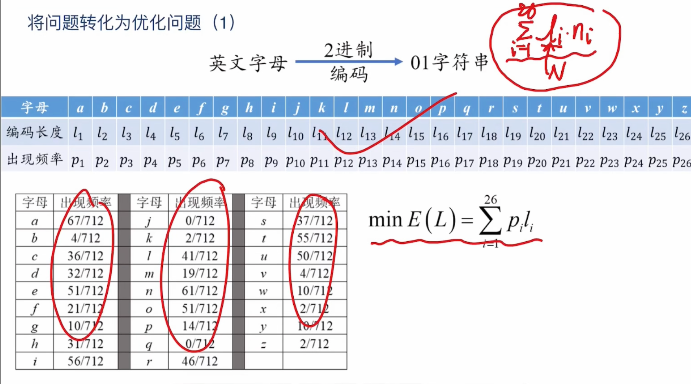
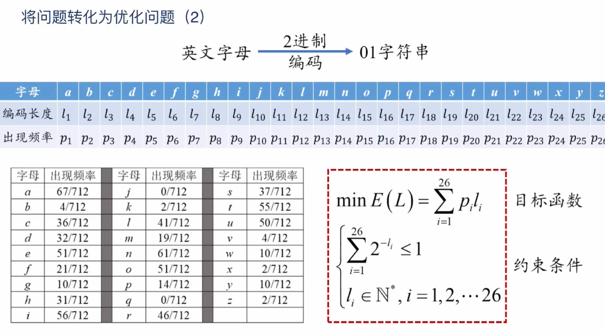

ML的信息论基石-kraft不等式，信息熵，KL散度
注：请多刷新一次前端，以渲染数学公式。
一、基本名词与概念
1. 前缀码与前缀自由码
- 前缀码：没有一个码字是另一个码字的前缀。例如霍夫曼码。
- 重要性：前缀码满足即时唯一可译性（译码时不会二义并且即时解码AA）。
2. Kraft不等式
Kraft不等式是信息论中关于前缀编码（或者说前缀码树/二叉树）的一个重要结论。它说明任意一组前缀码的码长 $ l_1, l_2, \ldots, l_n $ 必须满足
$ \sum_{i=1}^n 2^{-l_i} \leq 1 $
反之，只有满足这个不等式才有可能存在对应的前缀码。
Kraft不等式证明
必要性（任何前缀码的一组码长都满足Kraft不等式）：
设$ D $为二叉树，每个码字可表示为树的一条路径。
- 码长为 $ l_k $ 的码字在树的第 $ l_k $ 层，是一个叶子。
- 每一层最多有 $ 2^{l_k} $ 个节点，叶子节点互不重叠。
- 所有码字实际占用的叶子数之和
$ \sum_{i=1}^n 2^{L-l_i} $
其中 $ L $ 为所有码长的最大值。
- 总叶子数为 $ 2^L $
- 所以有：$ \sum_{i=1}^n 2^{L-l_i} \leq 2^L \implies \sum_{i=1}^n 2^{-l_i} \leq 1 $
补充：什么叫码字实际占用的叶子数之和？
_假设我们最大码长是 _$ L $_，再看一个码字长度是 _$ l $。
- 一个长度为 $ l $ 的码字，从根到它走了 $ l $ 步。
- _如果继续从它往下走，走满长度 _$ L $，还能走 $ (L-l) $ 步。
- 每多一步可分岔两路，$ (L-l) $_ 步一共可以分成 $ 2^{L-l} $ 个不同的终点（叶子）。_
- 所以长度为 $ l $ 的码字，等价于在最大深度 $ L $ 处“占用”了 $ 2^{L-l} $ 个叶子。
充分性（只要码长满足Kraft不等式，就能构造前缀码）：
- 将所有 $ l_i $ 从小到大排序。
- 从编码树顶部出发，依次分配以 $ l_i $ 为长度的唯一路径（即叶子结点）；因Kraft不等式成立，子树不会重叠，必能分配完全部码字且不会出现有一个码字是其他码字前缀的情况。
- 具体可采用“字典树”方式依次分配。
3. 信息熵（Shannon Entropy）
对离散信源$ X $（概率分布为 $ {p_1, p_2, …, p_n} $）：
- $ H(X) = -\sum_{i=1}^n p_i \log_2 p_i $
- 这个数是用拉个朗日乘数法得到的，可以参考下面 “熵的最优性：如何由Kraft不等式推出熵”。
- 熵是最优平均编码长度的下界。
4. 最优编码定理
平均码长的最小值为熵或近似熵（$ \lceil l_i \rceil $ 情况下高于熵但不会超过1bit）：
- $ H(X) \leq L^* < H(X) + 1 $
这里摘要这个视频里面的证明：https://www.bilibili.com/video/BV1sV411k7qc/
假设我们要对一个文章中的字母用前缀码进行编码，那么如何让整个文章的编码最短的问题就转换为使得下图的中的E(L)变得最小。

目标函数有了，优化的约束就是Kraft不等式（满足前缀码的充要条件）。

这里选择用拉格朗日乘数法来求解，但是拉格朗日乘数法只适合解等式不能解不等式。所以先考虑等式的情况。

$l_i = - \log_2 p_i$，这里的$l_i$就是每个字母对应的码长了。因为码长不能是小数，所以要进行上取整。
- 相关推导正是“在Kraft约束下极小化码长”——见“熵的最优性推导”小节。
5. 交叉熵与KL散度
- 交叉熵 $ H(P, Q) $：用$ Q $分布编码真实分布$ P $的信息平均长度：
$ H(P, Q) = -\sum_x p(x) \log q(x) $
- KL散度（相对熵）：
$ D_{KL}(P | Q) = \sum_x p(x) \log \frac{p(x)}{q(x)} = H(P, Q) - H(P) $
- 表示用$ Q $代替$ P $时的“额外码长”。
二、各部分逻辑关系
- Kraft不等式 —— 判断前缀码能否存在及如何分配码长；
- 最优编码定理 —— 满足Kraft不等式的最优平均编码长度的理论极限；
- 信息熵 —— 度量信源不确定性，也限制度量最优编码效率；
- 交叉熵/相对熵 (KL散度) —— 两个概率分布编码效率的度量，机器学习损失函数常用。
简要表格
| 概念 | 数学表达 | 目的/意义 |
|---|---|---|
| Kraft不等式 | $ \sum 2^{-l_i} \leq 1 $ | 判断能否分配码长形成前缀码 |
| 信息熵 | $ H(X) = -\sum p_i \log_2 p_i $ | 不确定性度量、最优平均码长下界 |
| 最优编码定理 | $ H(X) \leq L^* < H(X)+1 $ | 连接实际编码与熵的极限 |
| 交叉熵 | $ H(P, Q) = -\sum p(x)\log q(x) $ | “用Q表示P”的平均信息长度 |
| KL散度 | $ D_{KL}(P | Q)=\sum p(x)\log\frac{p(x)}{q(x)} $ |
参考
ML的信息论基石-kraft不等式，信息熵，KL散度
https://cl0und.github.io/2025/05/03/ML的信息论基石-kraft不等式，信息熵，KL散度/